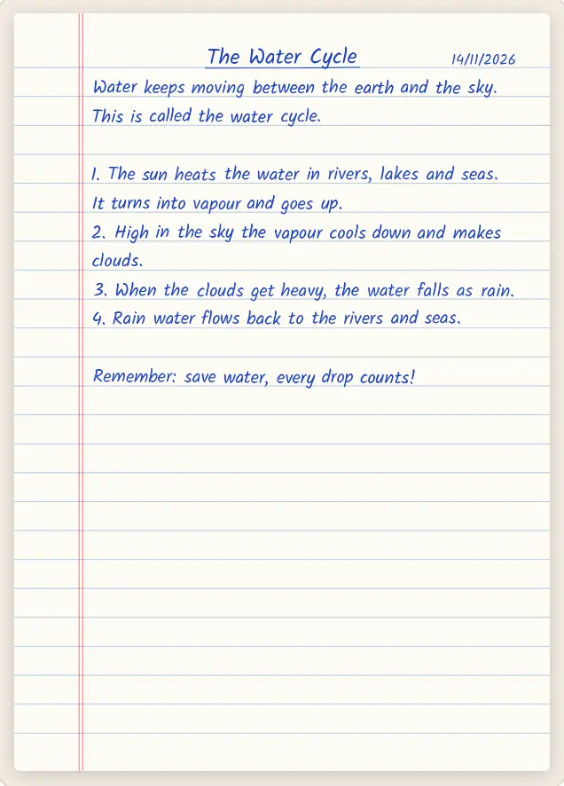

Convert text to handwriting for free
A poem, a greeting, a wall poster or a neat copy of your own notes often looks nicer in handwriting than in type. This free app writes your text on a notebook page, in your browser. One honest note first: it is for notes and creative use. School work that has to be handwritten should be written by the student.
Short answer
Open Text to Handwriting, type or paste your text, and choose “Paper”, “Ink colour” and “Writing size”. Set “Natural look” so that the letters move a little, like real writing. Press “Download this page” for a picture, or “Print / Save as PDF” and choose Save as PDF.
Text to handwriting in 5 steps
-
Type or paste your text
Open Text to Handwriting. It opens with a sample page. Type or paste your own text in the box: the page changes as you type. Add a heading and a date for the first page if you want them.
-
Choose the paper and ink
Under “Paper” choose “Ruled”, “Ruled + margin” or “Plain”. Under “Ink colour” choose blue, black or dark blue.

Choose the paper, ink colour, writing size and natural look. -
Set the size and spacing
Move “Writing size” and “Line spacing” until the page looks like a real notebook page and is easy to read.
-
Give it a natural look
“Natural look” makes small changes in height, tilt and gaps, like real writing. Press “New pattern” for a different pattern.
-
Download or print
Long text goes on more pages, up to 30 at a time. Press “Download this page” for a PNG picture of the page; with more pages, you can also download them all. For a PDF, press “Print / Save as PDF” and choose Save as PDF.

The text, written by hand on a ruled page.
Good to know
- Use it honestly: for your own notes, greetings, poems, posters and pages for handwriting practice. Do not hand it in as handwritten homework or an assignment. That work must be written by the student.
- The handwriting look is best in English, Hindi and Marathi. Other languages are shown in the normal font of your device, with a small wobble.
- Ideas: a poem or a greeting that looks hand-written, a poster for the classroom wall, or a neat page to copy from for handwriting practice.
- Your text stays on your device. Nothing is uploaded, so private notes stay private.
Get new free tools and Hindi AI lessons
Join our email list to hear about new free apps, new guides and Hindi video lessons on AI. No spam.
For adults (18+). You can unsubscribe at any time.
Why we recommend these tools
- Free for everyone: no ads, no sign-up and no paid plan.
- Private: your files and details stay on your own device.
- Works on a phone, laptop or smartboard, and offline once opened.
- Available in 12 languages, including Hindi.
Prefer video? Watch free Hindi lessons on AI and free tools on our YouTube channel.
Frequently asked questions
How do I convert text to handwriting for free?
Open the app, paste your text, choose the paper and ink, and download the page. It is free, with no sign-up and no watermark.
Can I use it for school assignments?
Use it for your own notes and for creative things. If a teacher asks for handwritten work, write it yourself. Writing it is part of the learning, and giving a generated page as your own handwriting is not honest.
Does it work for Hindi?
Yes. Hindi and Marathi have a handwriting font here, like English. Text in other scripts also comes on the page, but in the normal font of your device.
Can I get a PDF?
Yes. Press “Print / Save as PDF” and choose Save as PDF in the print window. All the pages go into one PDF. “Download this page” saves one page as a picture.
Is this my own handwriting?
No. The app uses one handwriting-style font. It does not copy your handwriting or anyone else's.
Found this useful?
Send it to a friend, your colleagues or your school's WhatsApp group.